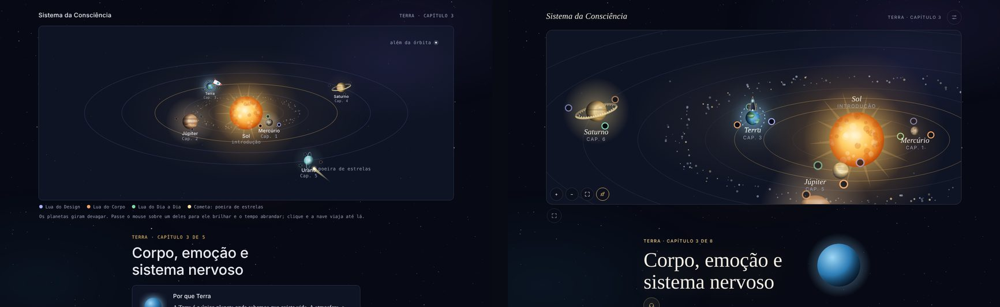
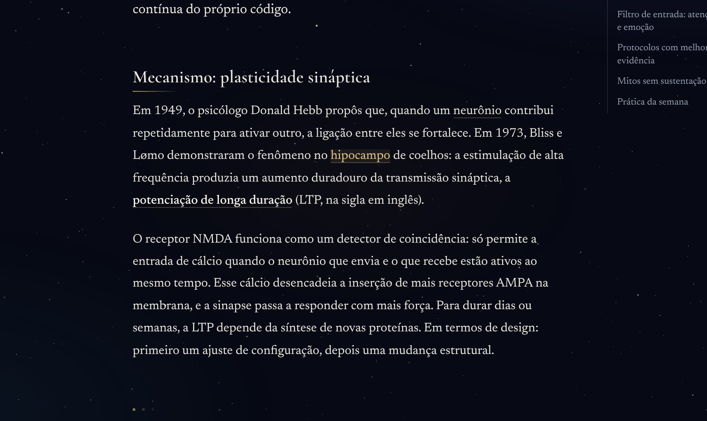
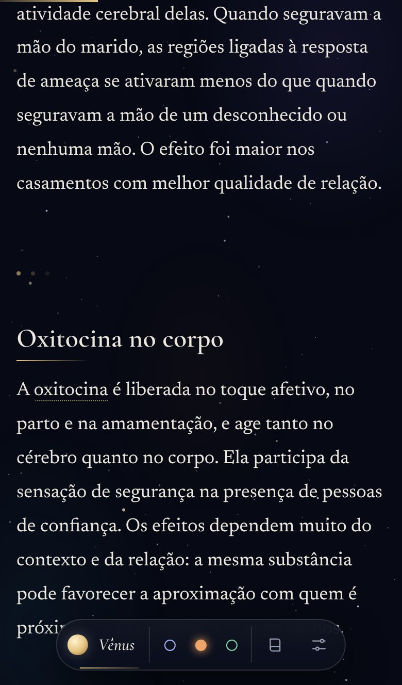
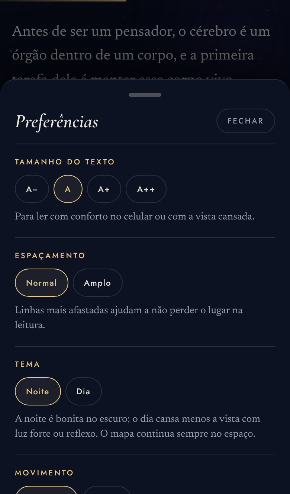
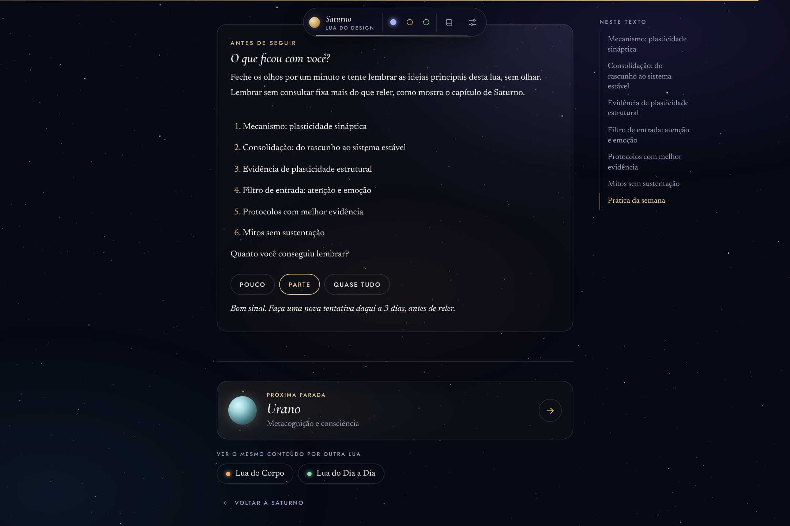

Sistema da Consciência
Um e-book de neurociência em que cada leitor escolhe como quer entender.
Nota de método. Este é um protótipo funcional, ainda sem teste formal com leitores. As decisões abaixo vêm de princípios de design e da pesquisa sobre aprendizagem, não de dados de uso. Eu defini o conceito, a estrutura e cada decisão de design; a IA (Claude) escreveu o texto, as traduções e o código sob a minha direção, e eu revisei e corrigi cada versão.
O Sistema da Consciência transforma um livro sobre neurociência e metacognição num sistema solar navegável. Cada um dos oito planetas é um capítulo, e cada capítulo pode ser lido de três formas, as luas: pelo design, pelo corpo ou pelo dia a dia. O e-book está em português, inglês, espanhol e italiano.

O problema
Os livros de divulgação sobre o cérebro tendem a dois extremos: densos demais para quem está começando, ou simplificados a ponto de prometer o que a ciência não sustenta.
E cada pessoa entende de um jeito. Umas precisam ver o sistema, outras precisam sentir no corpo, outras precisam de um exemplo do dia a dia. Um texto único obriga todas a entrar pela mesma porta.
O mesmo conteúdo, três portas de entrada.
A ideia central
O Sol é a introdução. Ao redor dele giram os oito planetas, na ordem real do sistema solar, e cada um tem um motivo para ser aquele capítulo: Mercúrio, o mensageiro, abre com a percepção; Vênus fala do cérebro social; a Terra, do corpo; Marte, da motivação; Júpiter, com as suas dezenas de luas, das redes do cérebro; Saturno, deus do tempo, da memória; Urano, que gira deitado, da metacognição; e Netuno, o mais distante, do sono.
Cada planeta tem três luas com o mesmo conteúdo em três linguagens. A Lua do Design explica com sistemas e interfaces, a do Corpo com sensações e fisiologia, a do Dia a Dia com frases curtas e exemplos da vida comum, como um médico explicaria a um paciente.
Princípios
Calma antes de informação
O leitor chega para entender a própria mente. O produto não pode competir com ela.
Cada elemento tem um porquê
Se não dá para dizer quem usa uma peça e em que momento, ela não entra.
Ciência honesta
Estudos citados com autor e ano, limites declarados, nenhuma promessa de milagre.
O leitor escolhe o caminho
Três luas, nenhuma melhor que a outra. O produto sugere, nunca impõe.
Decisões de design
Cada versão do protótipo revelou um problema concreto. Estas são as decisões que mais mudaram a experiência.
01
Nomes que não se sobrepõem
Com os planetas em órbita, os nomes colidiam. Os rótulos ganharam uma camada própria que, a cada quadro, testa posições abaixo e acima de cada planeta e esconde o que não cabe, com prioridade para onde o leitor está.
02
De painel técnico a livro
A primeira versão usava fonte monoespaçada e parecia um painel de controle. Passou a usar uma serifa clássica nos títulos, uma fonte de leitura longa no texto e uma sem serifa discreta nos rótulos.
03
A barra flutuante tem um porquê
Ao ler, o mapa sai da tela e o leitor perde três coisas: onde está, quanto falta e como sai. A barra aparece só nesse momento e responde às três.
04
Toques sem querer
No celular, as luas ao lado dos planetas eram tocadas por engano. Passaram a mostrar só o progresso, e o planeta inteiro virou o alvo, que leva sempre à introdução do capítulo.
05
Uma viagem com ordem
Cada planeta abre quando o leitor lê uma lua do anterior, porque cada capítulo usa ideias do anterior. Quem revisa ou ensina pode liberar todos nas preferências.
06
Preferências com justificativa
Tamanho do texto, tema, movimento calmo e modo foco, cada um com uma linha que diz para quem serve: vista cansada, luz forte, sensibilidade a animações.
07
Passagens como fases de jogo
Mudar de planeta é mudar de fase. Uma cinemática curta leva a nave ao planeta seguinte, cada capítulo termina numa tela de resultado com as luas lidas e a ideia para guardar, e a viagem fecha com as oito fases acesas. Tudo pode ser pulado, e no modo calmo vira um corte suave.
08
Quatro línguas, sem procurar o botão
O e-book abre na língua do aparelho (português, inglês, espanhol ou italiano) e usa o inglês quando a língua não está disponível. Um aviso discreto diz em que língua a pessoa está lendo, e a troca nas preferências mantém o leitor no mesmo trecho.
09
Menos ruído ao chegar
Ao chegar a um planeta, o mapa se aproxima dele, a nave pousa no topo e somem a linha do tempo, a legenda e as instruções. O título do capítulo cabe na primeira tela do celular, um aviso discreto convida a rolar e um só botão devolve a vista do sistema inteiro. No celular, o mapa responde à pinça, como uma foto.
10
Ouvir em vez de ler
Cada texto pode ser ouvido com a voz do próprio aparelho, na língua do leitor. O trecho em leitura fica destacado, a página acompanha, e um toque em um parágrafo recomeça dali. Serve a quem tem a vista cansada, a quem lê melhor ouvindo e a quem quer seguir a viagem caminhando.





Diário de direção
Designer de Experiência do Usuário que dirige IA
Este e-book foi construído em conversa com uma IA (Claude). Eu não escrevi o código. Defini o que fazer, testei cada versão no celular e no computador e devolvi o que não estava certo, como quem dirige uma equipe.
Abaixo, alguns momentos em que a direção mudou o produto: o que eu vi, o que decidi e o que mudou. Quando havia um erro técnico, a IA investigou a causa e corrigiu. Ver o erro e decidir o que estava certo foi o meu trabalho.
01
Cinco capítulos não fecham um sistema solar
Decidi: oito capítulos, na ordem real dos planetas, de Mercúrio a Netuno, girando cada um no seu ritmo. Mudou: Vênus, Marte e Netuno ganharam capítulos próprios, e o mapa passou a se mover como o céu de verdade.
02
O texto soava como autoajuda
Decidi: uma voz mais médica e científica, que explica com estudos e diz o que ainda não se sabe. Mudou: os estudos passaram a ser citados com autor e ano, e cada capítulo declara os seus limites.
03
A passagem entre planetas era rápida demais
Decidi: tratar cada capítulo como uma fase de jogo, com tempo para respirar entre uma e outra. Mudou: cinemáticas mais lentas, uma tela de fim de capítulo, uma tela de fim de viagem, e tudo pode ser pulado.
04
Saturno estava mal desenhado
Decidi: não corrigir só o planeta: pedir um teste do fluxo inteiro, com lista de erros e relatório. Mudou: Saturno foi redesenhado e todas as rotas do e-book foram percorridas em busca de falhas.
05
No celular, a abertura parava no meio
Decidi: testar onde as pessoas realmente abrem um link: no navegador do Instagram, num celular comum. Mudou: a IA encontrou um erro de desenho no crescimento dos planetas e corrigiu; o botão de começar voltou ao centro da tela.
06
Quem não lê português ficava de fora
Decidi: quatro línguas, escolhidas sozinhas pela língua do aparelho, com inglês como reserva e troca nas preferências. Mudou: o e-book inteiro em português, inglês, espanhol e italiano, e a troca mantém o leitor no mesmo trecho.
07
Precisava de um botão para ouvir o texto
Decidi: que todo o texto pudesse ser ouvido. Eu não sabia como fazer; a IA propôs usar a voz do próprio aparelho, e eu aprovei. Mudou: um botão Ouvir, com o trecho em leitura destacado e velocidade ajustável.
08
Ao chegar, havia informação demais
Decidi: aproximar o mapa do planeta, esconder a linha do tempo, a legenda e as dicas, e deixar o título em foco. Mudou: a nave pousa no planeta, um aviso convida a rolar e, no celular, o mapa responde à pinça.
09
Havia o botão de ver tudo, mas não o de voltar
Decidi: um único botão que alterna entre as duas vistas, para o leitor nunca ficar preso numa delas. Mudou: o mesmo botão mostra o sistema inteiro e devolve a vista focada no planeta.
10
Os botões ocupavam espaço demais
Decidi: botões só com ícone, em círculo, que mostram o nome ao passar o mouse; depois de testar o primeiro, o padrão em todos. Mudou: a barra superior e a de leitura ficaram mais limpas, sem perder o nome de cada ação.
11
Três planetas iguais na mesma tela
Decidi: deixar só um e tirar o planeta de dentro do cartão Por que Marte, pintando o cartão com a cor do planeta. Mudou: cada capítulo tem um só planeta em destaque, e a cor faz o papel que antes era da imagem repetida.
O produto pratica o que ensina
O capítulo de Saturno explica que lembrar sem consultar fixa mais do que reler, e que espaçar as revisões ajuda a memória a durar. O próprio e-book usa essas duas ideias.
No fim de cada lua, um cartão pede ao leitor que tente lembrar as ideias principais antes de vê-las. Depois, ele diz quanto lembrou, e o produto marca a lua para revisão daqui a um, três ou sete dias. Na volta, a linha do tempo e a página inicial mostram o que está na hora de rever.
